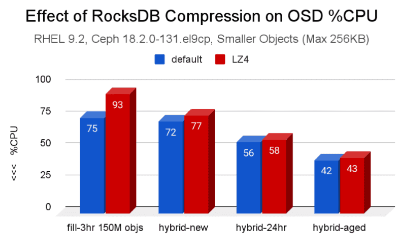
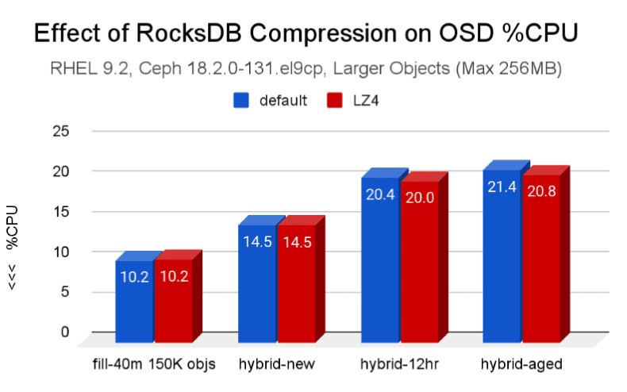
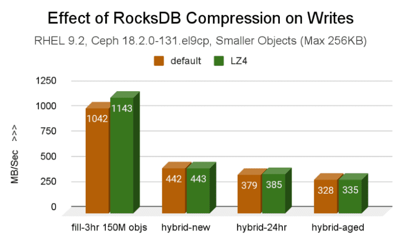
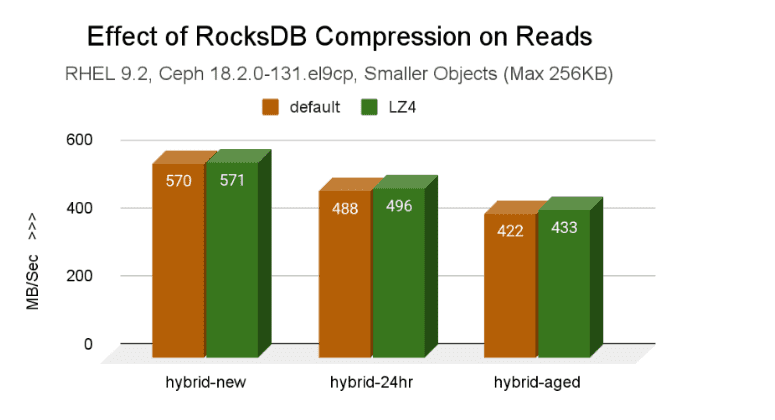
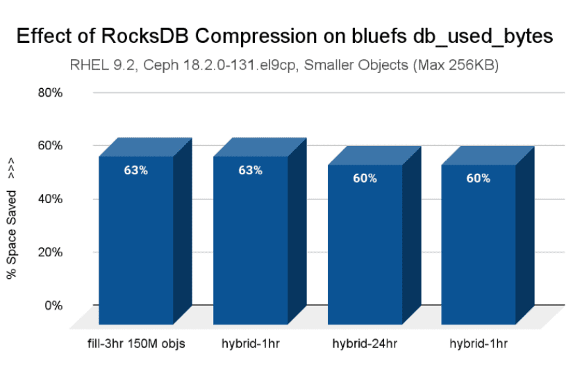
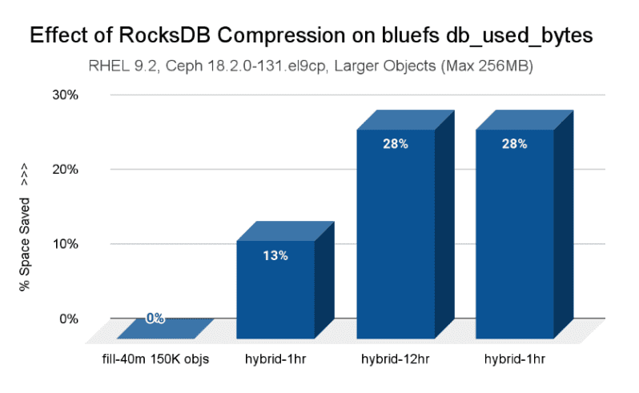
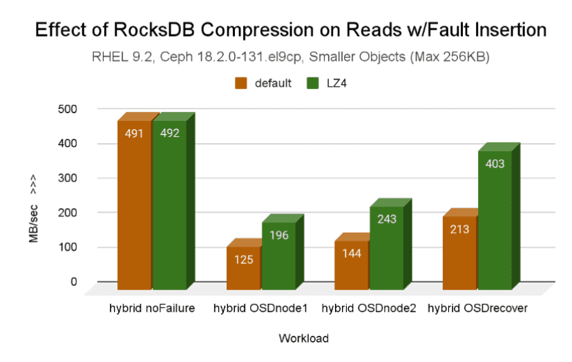
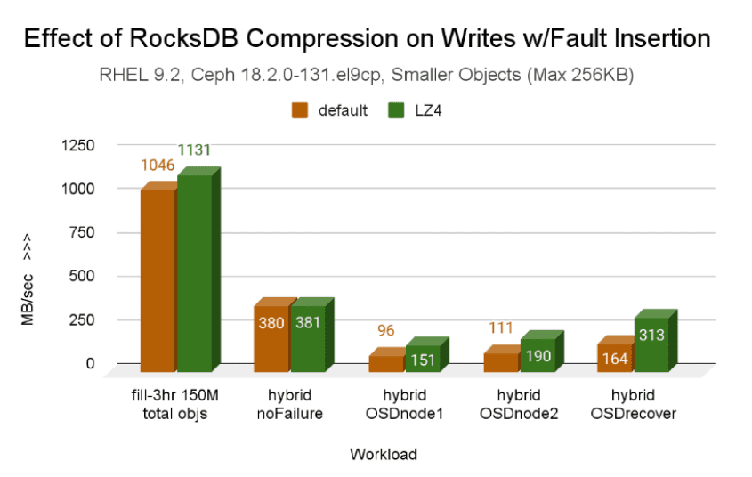
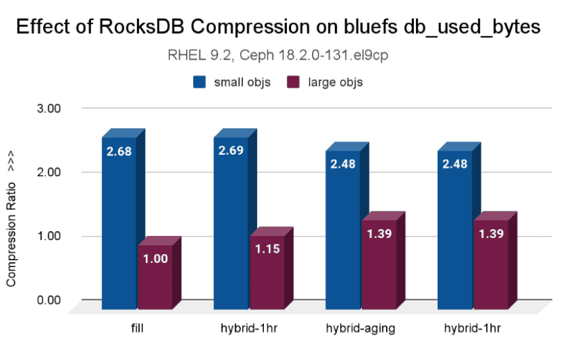

RocksDB Compression in Ceph: Space Savings with No Performance Cost

Introduction ¶
In the world of data storage, engineers and architects constantly face a fundamental dilemma: the trade-off between performance and efficiency. It’s a balancing act. When you want to save space, you typically enable features like compression, but the common assumption is that this will cost you performance, a CPU cycle tax that slows throughput.
But what if you could significantly reduce your metadata storage footprint without slowing things down?
This search for an answer to this question started with research work from Mark Nelson, who published a blog post on ceph.io that covers RocksDB tuning in depth, exploring RocksDB compression with positive results. These promising results sparked a conversation on the upstream GitHub about enabling compression by default; a link to the PR is available here.
To build on the previous investigation, the Ceph performance team ran tests on a robust hardware configuration running IBM Storage Ceph 7.1 (Reef). The cluster used the BlueStore OSDs for an erasure-coded (EC 4+2) pool, with a hybrid OSD storage setup: HDDs for object data and fast NVMe drives for the BlueStore WAL+DB.
To understand the test, it's helpful to know what the WAL+DB is. In modern Ceph, the BlueStore storage engine manages all data on the OSDs (physical devices). To do this, it must maintain a vast catalog of internal metadata: think of it as a high-speed index that quickly locates every piece of data.
RocksDB, a high-performance key-value database, manages this critical index. In our hybrid cluster, the RocksDB database runs on the fast NVMe deviceses, while the actual object data resides on the slower HDDs.
Because this metadata can grow very large, RocksDB's efficiency, how much space it consumes on those expensive NVMe drives, is a critical factor in the cluster's overall cost and performance. Our test, therefore, focuses on a simple, high-stakes question:
Can we compress this metadata to save space without paying a performance penalty?
Executive Overview ¶
The results were not just positive; they were counterintuitive, revealing a powerful opportunity for optimization that comes with virtually no downside.
The results confirm that using RocksDB compression has no detrimental effect on either throughput or resource consumption in Ceph, while providing significant savings in DB space (compression ratio), especially for smaller objects. As a result of the tests, RocksDB encryption is now enabled by default beginning with the Squid release.
Test Environment and Details ¶
All tests were run against the Ceph Gateway (RGW) to simulate a typical Object Storage workload.
Two different sets of object sizes were used in testing. Each workload leveraged five clients and a range of fixed sizes (one object size per bucket, repeated across the total bucket count), as listed below.
Testing Configuration ¶
Smaller
- 1 KiB, 4 KiB, 8 KiB, 64 KiB, 256 KiB
- 100K objects, 300 buckets, five clients (150M total objectss)
- Fill Workload (~8%) - 3hr
- Hybrid workload (45% reads, 35% writes, 15% stats, 5% deletes)
Larger
- 1 MiB, 4 MiB, 8 MiB, 64 MiB, 256 MiB
- 300 objects, 100 buckets, five clients (150K total objects)
- Fill Workload (~7%) - 40m
- Hybrid workload (45% reads, 35% writes, 15% stats, 5% deletes)
Hardware Used ¶
Two identical clusters, each with
3x Monitor / Manager nodes
- Dell R630
- 2x E5-2683 v3 (28 total cores, 56 threads)
- 128 GB RAM
8x OSD / RGW nodes
- Supermicro 6048R
- 2x Intel E5-2660 v4 (28 total cores, 56 threads)
- 256 GB RAM
192x OSDs (BluesStore): 24 2TB HDD and 2x 800GB NVMe SSD for WAL/DB per node
Pool:
site{1,2}.rgw.buckets.dataEC 4+2,pg_num=4096
The "Free Lunch" is Real: Significant Space Savings at Zero Performance Cost ¶
The primary and most surprising finding from our tests is that enabling RocksDB compression had no negative impact on performance. The specific algorithm used was LZ4, a lightweight solution known for its high speed. Our analysis suggests that modern CPUs are so efficient at processing algorithms like LZ4 that the overhead is negligible, particularly when compression operations occur on the high-speed NVMe devices where the RocksDB database resides.
Across a variety of hybrid workloads (45% reads, 35% writes, 15% stats, and 5% deletes), we observed no detrimental effect on throughput or CPU resource consumption compared to running the same workloads without compression. This effectively eliminates the traditional trade-off.
Graph 1. CPU Consumption for Small Objects

Graph 2. CPU Consumption for Large Objects

Graph 3. Throughput for Small Object Writes

Graph 4. Throughput for Small Object Reads

The results confirm that using RocksDB compression has no detrimental effect on either throughput or resource consumption in Ceph, while providing significant savings in DB space (compression ratio), especially for smaller objects. This allows a smaller WAL+DB offload partition for each OSD, or conversely helps avoid spillover of RocksDB level data onto the BlueStore slow device.
Small Objects, Massive Gains: A Game-Changer for Object Storage Workloads. ¶
While compression proved beneficial across the board, its impact was most dramatic on small-object workloads. Our tests, which used object sizes ranging from 1 KiB to 256 KiB, showed a remarkable reduction in the storage required for RocksDB metadata. In a BlueStore configuration, Ceph's internal metadata is managed by a RocksDB database running on top of the BlueFS file system on a fast storage device, in our case, an NVMe SSD.
The single most impactful data point we recorded was this: with compression enabled, the bluefs db_used_bytes workload for small objects required 2.68 times less storage during the cluster fill. This is a massive efficiency gain. For any organization whose workload involves storing millions or even billions of tiny objects, the metadata overhead can become a significant storage burden. This feature directly and powerfully addresses that specific pain point by compressing the metadata database on the fast offload device, not object data on HDDs.
This is particularly critical for Object Storage (RGW) workloads. When using the Ceph Object Gateway (RGW), all rich metadata associated with an object, such as its name, size, ACLs, and custom user tags, is stored in RocksDB instances spread across the OSDs that comprise the index pool. Furthermore, the bucket index, which lists all objects within a bucket, is maintained as omap entries in this same database.
For clusters with millions or billions of small objects, this metadata and index data can swell to consume terabytes of space, often becoming the primary capacity bottleneck on the expensive, high-speed NVMe drives. Compressing RocksDB directly compresses this RGW metadata, providing massive and immediate relief on that fast tier.

It's Not Just for Small Objects: Large Objects Also See a Clear Benefit ¶
The positive effects were not limited to small objects. Our tests on large-object workloads, ranging from 1 MiB to 256 MiB, also showed clear benefits. While the source report highlights the most dramatic space savings for small objects, it explicitly notes that the positive effect across both sets of object sizes is evident, making compression a clear win for large-object workloads as well.

Furthermore, our test plan included stressful OSD failure scenarios to measure behavior under duress. The overall conclusion of "no detrimental effect" on performance or resource consumption held even during these fault and recovery operations. This implies that RocksDB compression is not just efficient but also a stable and robust feature under pressure.
Graph 5. Throughput for Small Object Reads During Failure

Graph 6. Throughput for Small Object Writes During Failure

Conclusion: A Feature That Should Be Enabled By Default ¶
Based on this comprehensive testing, RocksDB compression in a Ceph environment is a low-risk, high-reward feature. It breaks the old rule that says efficiency must come at the expense of performance. The evidence points to a clear win: substantial storage savings on the metadata layer, with no measurable trade-off in throughput or CPU usage.

This led to a simple conclusion: given the potential for substantial space savings with no performance downside, the decision was to enable RocksDB LZ4 compression by default in the Squid release.
# ceph version
ceph version 19.2.1-222.el9cp (f2cd71cc2f7b46709c2351134ac89ea3e9f609b6) squid (stable)
# ceph config get osd bluestore_rocksdb_options
compression=kLZ4Compression,max_write_buffer_number=64,min_write_buffer_number_to_merge=6,compaction_style=kCompactionStyleLevel,write_buffer_size=16777216,max_background_jobs=4,level0_file_num_compaction_trigger=8,max_bytes_for_level_base=1073741824,max_bytes_for_level_multiplier=8,compaction_readahead_size=2MB,max_total_wal_size=1073741824,writable_file_max_buffer_size=0
The authors would like to thank IBM for supporting the community with our time to create these posts.